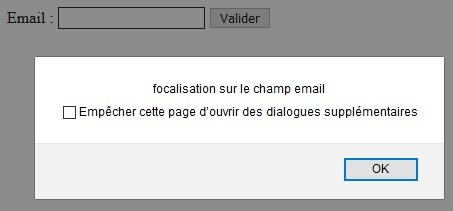
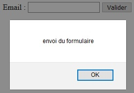

Comme en JavaScript pur, jQuery permet l'ajout d'écouteurs d'événements qui seront déclenchés par le navigateur ou l'utilisateur. Il peut s'agir d'un chargement de page, d'un clic sur un bouton ou encore de la manipulation des champs d'un formulaire.
Sans le savoir, nous avons déjà utilisé un écouteur d'événement au cours des précédentes étapes de l'initiation à jQuery.
Lorsque nous écrivons : $(document).ready(function() {}), l'événement ready est écouté. Il signifie, quand le DOM est chargé, d'exécuter le script jQuery correspondant.
Créer un écouteur d'événement avec jQuery est très simple : il suffit d'appliquer la méthode correspondant à l'écouteur souhaité sur un élément.
Parmi les écouteurs les plus utilisés :
See the Pen Untitled by OpenSpirit (@OpenSpirit) on CodePen.
Ici, l'événement focus est écouté sur le champ email du formulaire. En cliquant dans le champ pour saisir, le code correspondant sera exécuté.
Il est possible de déclencher un événement sans attendre une action de l'utilisateur grâce à la méthode trigger(). Elle prend en paramètre le nom de l'événement (click, change, submit).
See the Pen Untitled by OpenSpirit (@OpenSpirit) on CodePen.
Ici, l'écouteur submit est simulé dès le chargement de la page, ce qui aura pour effet d'envoyer le formulaire sans cliquer sur le bouton.
Comme en JavaScript pur, e.preventDefault() peut être utilisé pour stopper le comportement par défaut de l'événement.